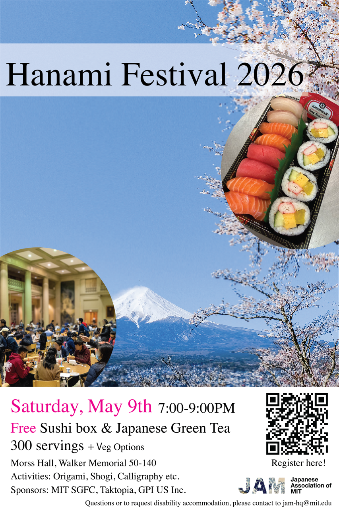
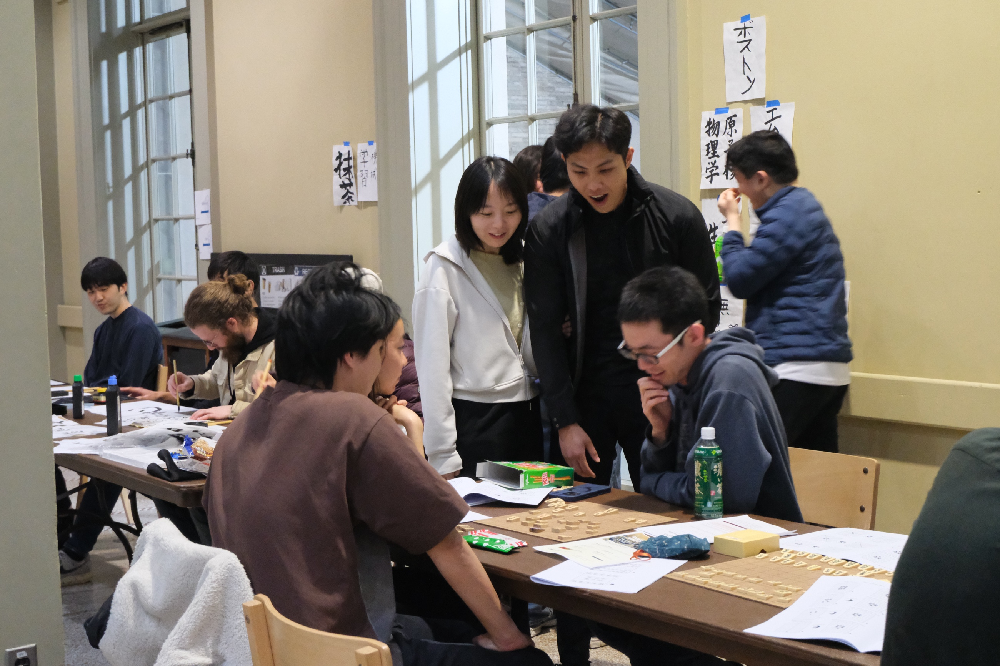
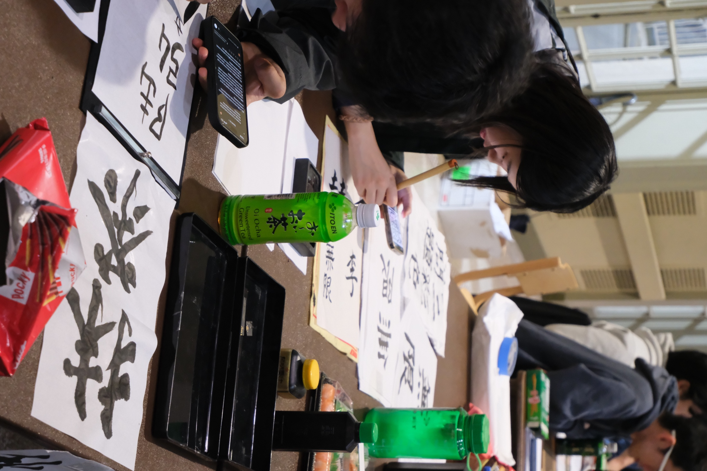
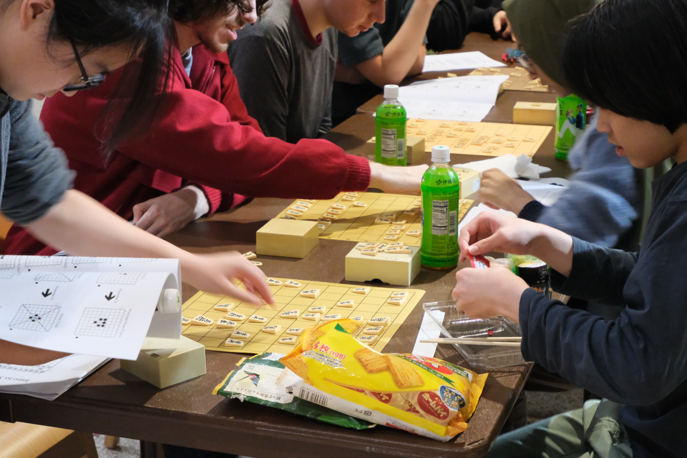
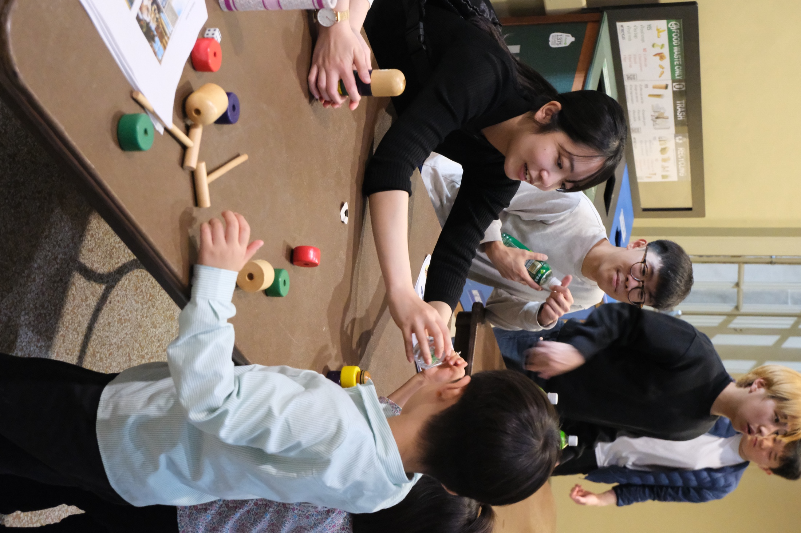
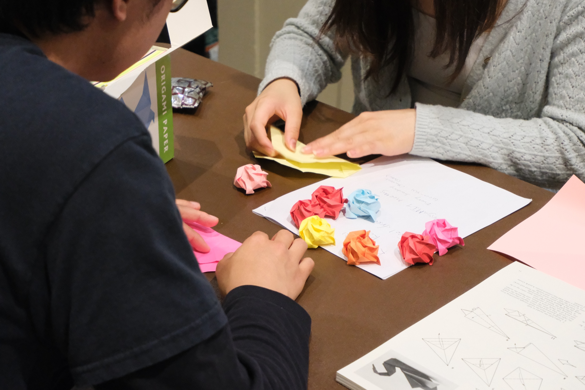
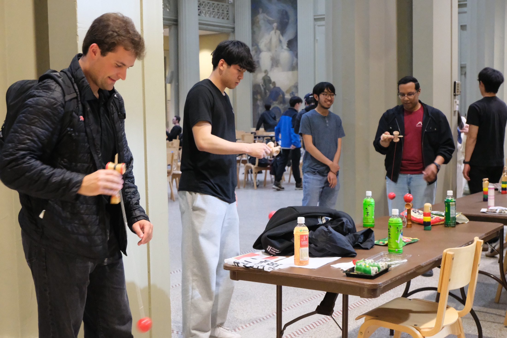

Food
Free sushi and Japanese refreshments create the first reason to gather, then the tables turn into conversation spaces.
Closed · annual spring festival
A spring gathering for the MIT community with food, tea, games, calligraphy, origami, and Japanese culture booths.

Event report
Hanami Festival 2026 is now closed. Even with weekend rain, the event drew about 350 participants. Sushi sold out in the first 30 minutes, and the shogi, origami, calligraphy, kendama, and other booths stayed lively throughout the evening.
Overview
Hanami is JAM's broadest cultural welcome: easy to enter, volunteer-powered, and built around food, conversation, and hands-on booths.
Free sushi and Japanese refreshments create the first reason to gather, then the tables turn into conversation spaces.
Matcha, shogi, origami, calligraphy, and other booths give visitors a way to participate instead of only watch.
JAM members organize registration, serving, booths, crowd flow, and cleanup so the event can stay warm and accessible.










Archive